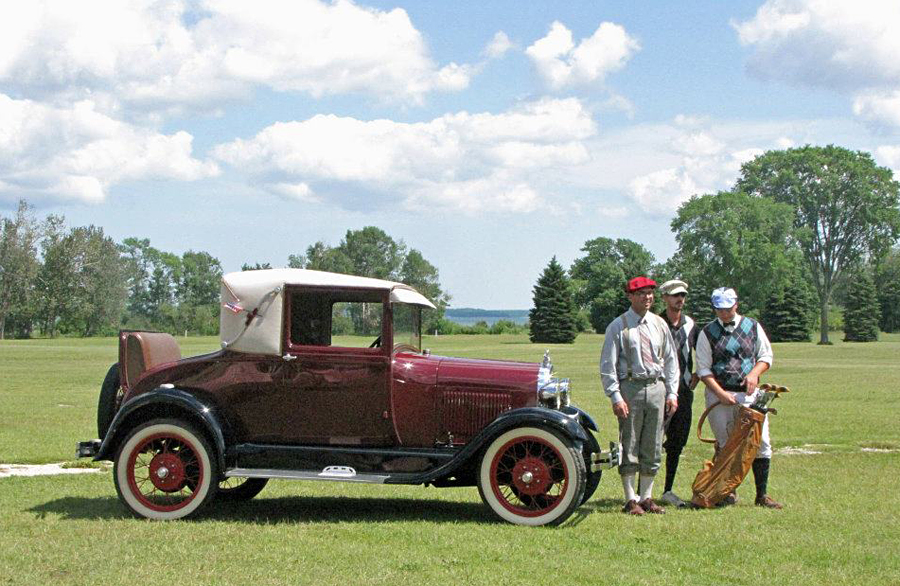

Second Oldest in Delta County
Established in 1922, Nahma Golf Club is the second oldest golf course in Delta County, Michigan. A legacy that no new course can replicate.
Over a century of public golf on the shore of Big Bay de Noc. The same course. The same community. Since 1922.

Nahma Golf Club was established in 1922, making it the second oldest golf course in Delta County. The course was laid out along the shoreline of Big Bay de Noc, a stretch of Lake Michigan that remains one of the most scenic settings in the Upper Peninsula.
The founders chose this site deliberately. The flat terrain along the bay made for a natural course layout, and the water on three sides shaped both the visual character of the holes and the kind of golf they set out to offer. This was always meant to be a public course, open to anyone who wanted to play.
Nahma Golf Club has never gone private. It has never become a resort operation. It has remained what it was built to be: a public course on the bay, open to the community.
The course design reflects its era. Nine holes, par 36, built on flat terrain along the water. At 2,875 yards it is walkable from the first tee to the last green, a layout that rewards shot-making over raw distance. Players who want to walk the course will find it comfortable in any condition.
The dish-shaped greens are not a quirk. They are a feature of the original 1922 design, and one of the elements that makes Nahma distinctive among courses in the Upper Peninsula.
Older, round, dish-shaped greens were a deliberate choice of the era. They channel the ball toward the center of the green, rewarding approach shots that find the right entry angle. Players who have only experienced modern bentgrass greens often find the classic dish greens a welcome change of pace. They read differently and play differently, and that is the point.
The course was designed to be accessible to everyone in the community, not just skilled golfers. That accessibility is baked into the layout itself. Wide fairways, open design, and a pace of play that fits any skill level. It was built this way on purpose, and it has stayed this way for over a century.
Nahma Golf Club has outlasted every economic cycle, every difficult season, and every change in the region. It has done that because the people of Delta County have kept coming back. Leagues, scrambles, outings, and family rounds. Generation after generation.
The men's league has run on Tuesday evenings. The women's league on Thursdays. The all-scramble on Wednesdays, open to everyone. Private outings have gathered company groups, families, and friends on this course for decades. The clubhouse has been the gathering point after every round.
It is the result of a course that was built with the community in mind from the beginning and has stayed true to that original purpose. The same nine holes. The same bay. The same public access that has been here since 1922.

Green fees from $18. No tee time required. Walk-ins welcome May through September on the shore of Big Bay de Noc.